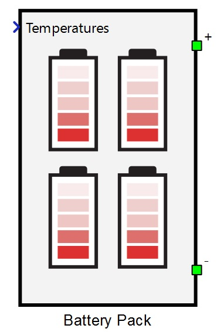
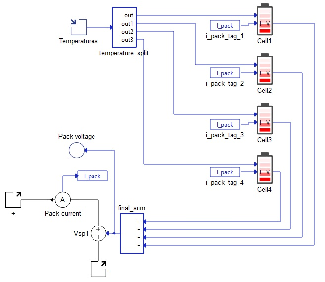

Battery Pack
Description of the Battery Pack component in Schematic Editor

Using the Battery Pack Component
The Battery Pack component is designed to allow you to quickly build a complete battery pack model using multiple Battery Cell components. This is done through setting your battery pack configuration in the Build (Tab), configuring individual Battery Cell settings in the remaining tabs, and then automatically generating the model by returning to the Build Tab and clicking the Build Battery Pack button.
The Battery Pack model is implemented in Typhoon HIL Schematic Editor using a variable number of Battery Cell components, a controlled voltage source, a current measurement, and a temperature input per 4 Battery Cell components. The Pack voltage signal that controls the voltage source is a signal processing sum of terminal voltages of all Battery Cells. Similarly, the Pack current measurements is the current through all Battery Cell components.
The component has two power electronics terminals, with a positive terminal on top and a negative terminal on bottom of the component (as shown in Figure 1). Additionally, there is another signal processing input which is a vector input of the cell temperatures, where each input corresponds to the respective Battery Cell component.
An example of the internal schematic diagram of the Battery Pack is shown in Figure 2.

Ports
- + (electrical)
- DC + port.
- - (electrical)
- DC - port.
- Temperatures (signal processing)
- Vector input of temperatures with the dimension of the vector being the applied Total Battery Cells in series (cell_no property). Vector signal is split inside this component and then each input is applied to the respective Battery Cell component.
Build (Tab)
- Total Battery Cells in series
- Sets the number of Battery Cell components inside this component. For the changes to this property to be effective, a build will have to be redone with the click of the Build Battery Pack button.
- Total Battery Cells in parallel
- For every Battery Cell component inside this component, there is a property which specifies the number of battery cells in parallel. Changing this property will change the property of parallel battery cells inside every single Battery Cell component. For the changes to this property to be effective, a build will have to be redone with the click of the Build Battery Pack button.
- Event frequency
- Specifies frequency of sent messages. Maximum allowed value of this property depends on the number of Battery Cell components and other CAN or CAN FD components in the model. It is generally safe to use 100 Hz for most applications, but often times 1 Hz is enough. For the changes to this property to be effective, a build will have to be redone with the click of the Build Battery Pack button.
- First Cell CAN FD ID
- First Battery Cell component CAN FD protocol message ID. Each consecutive Battery Cell component will have this integer number incremented so that each Battery Cell component has unique ID. For the changes to this property to be effective, a build will have to be redone with the click of the Build Battery Pack button.
- Operation mode
- Starting operation mode for voltage/current settings of the cell emulator control output for every Battery Cell component inside this component. Default is Controlled Voltage Mode, representing voltage control output. To activate current control at the start of the simulation, change this property to Controlled Current Mode. For the changes to this property to be effective, a build will have to be redone with the click of the Build Battery Pack button.
- Execution rate
- Execution rate of all the Battery Cell components inside this component. Also applies to the current measurement inside this component. For the changes to this property to be effective, a build will have to be redone with the click of the Build Battery Pack button.
- Build Battery Pack
- This button is responsible for generating the battery pack based on all the properties of this component. At the time of clicking, it will sample all the displayed values, which is different from saved values. For the safest and fastest use, please change all other properties accordingly before pressing this button. After pressing the button, wait for the battery cells to be generated (during this time, schematic editor will be unresponsive). Console will log the current state of battery cell building process. After the battery pack is completed, the schematic will become responsive again. It is crucial to press Ok on the mask and not the Cancel button. Alternatively, all the properties can be set and confirmed by pressing Ok, followed by reopening the component and pressing the Build Battery Pack button. Reloading the model will always result in rebuilding the Battery Pack, as if the Build Battery Pack button is pressed.
Basic parameters (Tab)
- State of charge vector
- An array-like element and input into look up tables corresponding to other parameters inside this tab. It is the only mandatory field out of State of charge vector, Temperatures vector, and State of health vector for which at least one dimension of the Open circuit voltage vector look up table will be parametrized.
- Initial state of charge
- Sets the starting state of charge of the battery cell component in percentages.
- State of health vector
- An array-like element and input into look up tables corresponding to other parameters inside this tab. State of health vector is evaluated only in the case that other parameters in this tab have multidimensional arrays as inputs.
- Temperatures vector
- An array-like element and input into look up tables corresponding to other parameters inside this tab. Temperatures vector is evaluated only in the case that other parameters in this tab have multidimensional arrays as inputs. Temperature of the Battery Cell is provided by the signal processing input on the left side of this component.
- Open circuit voltage
- An array-like element representing the data points corresponding to State of charge vector with an optional temperature dependance.
- For the model to compile, the length of State of charge vector must be equal to the number of columns in Open circuit voltage vector.
- If the parameter Open circuit voltage vector contains a two dimensional array-like element, then the rows must correspond to values inside the Temperatures vector parameter. In that case, columns are still data points of State of charge vector and must be of the same length. There must also be the same number of rows as the length of State of charge vector.
- The output of the OCV is the linear interpolation between the provided points corresponding to the current state of charge (and temperature if a two dimensional array-like element is provided).
- Internal resistance
- The Internal resistance property can be constant, one dimensional array like element, or two dimensional array-like element.
- If a two dimensional array is provided, length of Temperatures vector must be equal to the number of columns in Internal resistance. There must also be the same number of rows as the length of State of health vector.
- If instead a one dimensional array is provided, the length of the Temperatures vector parameter will be the only dependance for calculating Internal resistance.
- A single value can also be provided for Internal resistance, in which case, no dependance is created and resistance is a constant value.
- Coulombic efficiency
- The Coulombic efficiency property can be constant, one dimensional array like element, or two dimensional array-like element.
- If a two dimensional array is provided, length of Temperatures vector must be equal to the number of columns in Coulombic efficiency. There must also be the same number of rows as the length of State of health vector.
- If instead a one dimensional array is provided, the length of the Temperatures vector parameter will be the only dependance for calculating Coulombic efficiency.
- A single value can also be provided for Coulombic efficiency, in which case, no dependance is created and Coulombic efficiency is a constant value.
- Nominal capacity
- The Nominal capacity combo box allows for parametrizing Battery Cell Total capacity by entering it directly or by calculating it from the available Discharge capacity. Choosing one option in this combo box will enable parameters corresponding to that option and disable parameters corresponding to the other option.
- Total capacity and Discharge capacity can each be constants, one dimensional array like elements, or two dimensional array-like elements. Using Total capacity as an example, if a two dimensional array is provided, length of Temperatures vector must be equal to the number of columns in Total capacity. There must also be the same number of rows as the length of State of health vector.
- If instead a one dimensional array is provided, the length of the Temperatures vector parameter will be the only dependance for calculating Total capacity.
- A single value can also be provided for Total capacity, in which case, no dependance is created and total capacity is a constant value. The same applies for the Discharge capacity parameter.
- Discharge capacity
- Available if Nominal capacity is set to Discharge capacity.
- Discharge capacity is the capacity that can be extracted from the fully charged battery with a particular constant current with a value of Discharge rate before it reaches the Minimum/cut-off voltage. Calculation is performed by including the effects of hysteresis (if enabled), diffusion voltage drop (if enabled), and the internal resistance voltage drop.
- Minimum/cut-off voltage
- Available if Nominal capacity is set to Discharge capacity.
- Total capacity
- Available if Nominal capacity is set to Total capacity.
- Total capacity is the total amount of energy cell contains when fully charged. It is not possible to extract all this energy at any finite discharge current (it would take an infinite amount of time to extract it all), so cell capacities are not typically given in terms of maximum capacity, but it is a necessary parameter for State of Charge calculation.
- Execution rate
- The signal processing time step for calculating the cell terminal voltage based on previous states and the current input.
Diffusion process (Tab)
- Model order
- Model order is a combo box which enables or disables up to three parallel connected resistor capacitor circuits. Resistors and capacitors are only modeled if their respective properties are enabled. If the Model order option is different than None, the Temperatures vector for diffusion parameters and State of health vector for diffusion parameters properties are enabled and represent array-like data for two dimensional or one dimensional look up tables, depending on the resistor and capacitor parameter fields.
- Resistor 1
- Available if Model order is different than None.
- Represents the resistor value in ohms for the first RC circuit. Can be constant, single dimensional array (list) or a two dimensional array (nested list).
- Capacitor 1
- Available if Model order is different than None.
- Represents the capacitor value in farads for the first RC circuit. Input value(s) can be constant, single dimensional array (list) or a two dimensional array (nested list).
- Resistor 2
- Available if Model order is set to 2 or 3.
- Represents the resistor value in ohms for the second RC circuit. Can be constant, single dimensional array (list) or a two dimensional array (nested list).
- Capacitor 2
- Available if Model order is set to 2 or 3.
- Represents the capacitor value in farads for the second RC circuit. Input value(s) can be constant, single dimensional array (list) or a two dimensional array (nested list).
- Resistor 3
- Available if Model order is set to 3.
- Represents the resistor value in ohms for the third RC circuit. Can be constant, single dimensional array (list) or a two dimensional array (nested list).
- Capacitor 3
- Available if Model order is set to 3.
- Represents the capacitor value in farads for the third RC circuit. Input value(s) can be constant, single dimensional array (list) or a two dimensional array (nested list).
- Temperatures vector for diffusion parameters
- Available if Model order is different than None
- Array-like data for two dimensional or one dimensional look up tables, depending on the resistor and capacitor parameter fields.
- State of health vector for diffusion parameters
- Available if Model order is different than None
- Array-like data for two dimensional or one dimensional look up tables, depending on the resistor and capacitor parameter fields.
Each of these resistor and capacitor parameters can be constants, one dimensional array-like elements, or two dimensional array-like elements. Using Resistor 1 as an example, if a two dimensional array is provided, the length of Temperatures vector for diffusion parameters must be equal to the number of columns in Resistor 1, and there must be the same number of rows as the length of State of health vector for diffusion parameters. If instead a one dimensional array is provided, the length of Temperatures vector for diffusion parameters will be the only dependance for calculating Resistor 1. You can also provide a single value for Resistor 1, in which case no dependance is created and it is calculated as a constant value. The same applies for all other parameters of the diffusion voltage.
Voltage hysteresis (Tab)
- Hysteresis model
-
The Hysteresis model property allows you to select hysteresis effect implementation. Currently, only two implementations are allowed: None and One state.
-
If None is selected for the Hysteresis model property, voltage from hysteresis is always set to zero.
-
- Temperatures vector for hystersis parameters
- Available if Hysteresis model is set to One state.
- Represents array-like data for two dimensional or one dimensional look up tables, depending on the M parameter, M0 parameter, and Gamma parameter fields.
- State of charge vector for hystersis parameters
- Available if Hysteresis model is set to One state.
- Represents array-like data for two dimensional or one dimensional look up tables, depending on the M parameter, M0 parameter, and Gamma parameter fields.
- M0 parameter, M parameter, Gamma parameter
- Available if Hysteresis model is set to One state.
-
Each of these parameters can be constants, one dimensional array-like elements, or two dimensional array-like elements. Using M parameter as an example, if a two dimensional array is provided, the length of Temperatures vector for hysteresis parameters must be equal to the number of columns in M parameter, and there must be the same number of rows as the length of State of charge vector for hysteresis parameters. If instead a one dimensional array is provided, the length of Temperatures vector for hysteresis parameters will be the only dependance for calculating M parameter. You can also provide a single value for M parameter, in which case no dependance is created and it is calculated as a constant value. The same applies for M0 parameter and Gamma parameter.
Thermal model (Tab)
- Battery cell thermal model
- Battery cell thermal model checkbox enables/disables the thermal model of the battery cell(s). If thermal model is enabled, the input temperature will no longer be the cell(s) temperature and will instead become the ambient temperature input to a Thermal network component, modeled with equivalent thermal resistances and capacitances according to the Cauer thermal model. The power input to the thermal network is obtained from ohmic losses coming from internal resistance and resistances coming from diffusion modeling. If there are multiple parallel battery cells specified in Number of cells in parallel, ohmic losses are combined from all the cells in parallel and injected as a power loss for a single thermal model, whose output is the temperature for all the battery cells in parallel.
- Thermal resistance(s)
- Available if Battery cell thermal model is enabled.
- Thermal resistance(s) must be either a list of values or a single value. The number of elements must be the same as for the Thermal capacitance(s) parameter.
- Thermal capacitance(s)
- Available if Battery cell thermal model is enabled.
- Thermal capacitance(s) must be either a list of values or a single value. The number of elements must be the same as for Thermal resistance(s) parameter.
- Initial cell temperature
- Available if Battery cell thermal model is enabled.
- Initial cell temperature defines the initial temperature of the thermal network(s) in Celsius.
Measurements (Tab)
- State of health
- Enables/disables monitoring of Battery Cell state of health through a probe with the name SOH inside this component.
- State of charge
- Enables/disables monitoring of Battery Cell state of charge through a probe with the name SOC inside this component.
- Open circuit voltage
- Enables/disables monitoring of Battery Cell state of health through a probe with the name OCV inside this component.
- Internal resistance
- Enables/disables monitoring of Battery Cell state of health through a probe with the name Internal resistance inside this component.
- Total capacity
- Enables/disables monitoring of Battery Cell state of health through a probe with the name Total capacity inside this component.
- Balancing current
- Enables/disables monitoring of Battery Cell state of health through a probe with the name Balancing current inside this component.
- Cell current
- Enables/disables monitoring of Battery Cell state of health through a probe with the name Cell current inside this component.
- Temperature
- Enables/disables monitoring of Battery Cell state of health through a probe with the name Temperature inside this component.
- Hysteresis voltage
- Enables/disables monitoring of Battery Cell state of health through a probe with the name Hysteresis voltage inside this component.
- Diffusion voltage
- Enables/disables monitoring of Battery Cell diffusion voltage drop through a probe with the name Diffusion voltage inside this component.
- Emulator measured current
 This property is ignored in TyphoonSim.
Changing its value will not affect TyphoonSim simulation at all.
This property is ignored in TyphoonSim.
Changing its value will not affect TyphoonSim simulation at all.- Requires Enable Cell Emulator property to be activated.
- Enables/disables monitoring of the current measurement which is coming from the Cell Emulator hardware device (if properly connected and if enabled). Name of the measurement is Emulator current.
- Emulator measured voltage
- This property is ignored in TyphoonSim.
Changing its value will not affect TyphoonSim simulation at all.
- Requires Enable Cell Emulator property to be activated.
- Enables/disables monitoring of the voltage measurement which is coming from the Cell Emulator hardware device (if properly connected and if enabled). Name of the measurement is Emulator voltage.
- Emulator measured
temperature
- This property is ignored in TyphoonSim.
Changing its value will not affect TyphoonSim simulation at all.
- Requires Enable Cell Emulator property to be activated.
- Enables/disables monitoring of the temperature measurement which is coming from the Cell Emulator hardware device (if properly connected and if enabled). Name of the measurement is Emulator temperature.
Note: The Battery Cell component terminal current and voltage measurements are automatically enabled and can be monitored by selecting probes inside this component named It and Cell voltage.